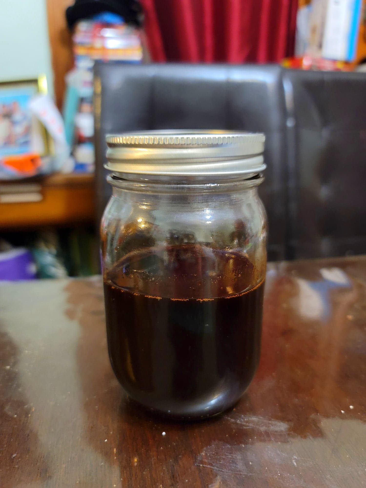

Pomegranate Molasses

Ingredients:
- 4 cups Pomegranate juice
- 1/2 cup Sugar
- 2 tbsp Lemon juice
Instructions:
- Combine the ingredients in a large saucepan. Heat over medium high until it starts to simmer and then reduce to just low enough to maintain the simmer. Let cook until it reduces to 1 cup, 45-60 minutes.